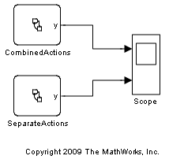
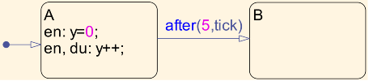
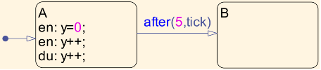
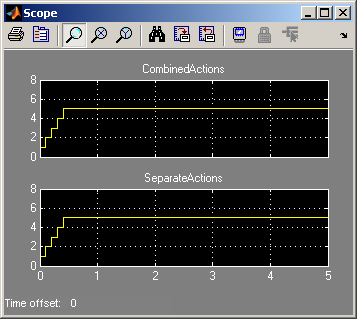

Using Combined Entry, Exit and During Actions in States
This model demonstrates a simple use of combined actions in the Stateflow action language. Starting from R2010a, you can combine separate actions in the action language of a state into a single composite action, making your code more concise.
Combined Actions
The chart CombinedActions demonstrates how the entry and during actions in a state can be combined into a single action.
Note that combining an entry and a during action does not preclude another, separate entry action.
Separate Actions
The chart SeparateActions depicts the same code as in CombinedActions/A, without the use of combined actions.
Collapsing actions that perform the same tasks into composite actions improves the readability of the code. This feature is purely a syntactic construct, with no implications on the semantics of the state. Note that both the CombinedActions and SeparateActions charts produce the exact same output when simulated.
